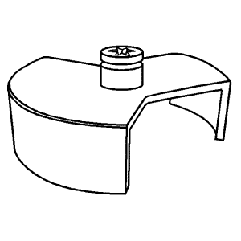
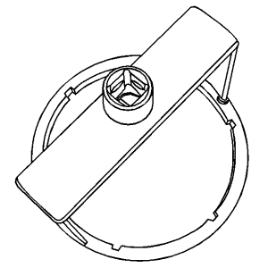
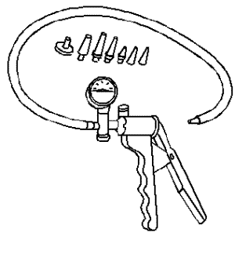
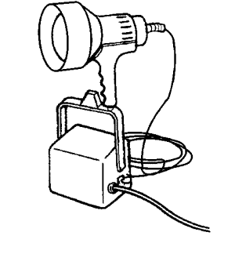
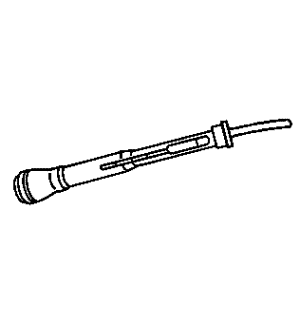
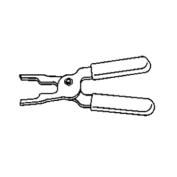
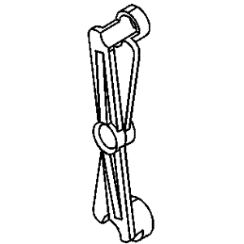

Cruze |
||||||||
|
|
|
|||||||
Ilustración | N.º de herramienta / Descripción |
|---|---|

| EN 48278 Herramienta de desmontaje y montaje del anillo de bloqueo de la bomba de combustible secundaria |
|
 | EN 48279 Herramienta de desmontaje y montaje del anillo de bloqueo de la bomba de combustible principal |
|
 | EN 48303 Herramienta de retención de la carcasa del filtro de combustible |

| EN 48304 Herramienta de montaje y desmontaje del fijador de filtros de combustible |

| EN 48357 Herramienta de desmontaje de inyectores |

| EN 49495 DW 100-763 Comprobador de la presión de combustible |

| EN 49799 Adaptador del manómetro de combustible |
|
 | J 23738-A EN 23738-A Mityvac |

| J 24460–01 EN 24460-01 Manómetro del sistema de refrigeración |
|
 | J 42220 GE 42220 Lámpara de detección de fugas universal de 12 V |
|
 | J 38641-B Aparato de verificación de calidad de combustible Diesel |

| J 43178 Herramienta de separación de la tubería de combustible |
|
 | J 43244 EL 43244 Tenazas extractoras de relés |
|
 | J 44581 CH 44581 Herramienta de separación de la tubería de combustible |

| J 45004 CH 45004 Tubo flexible de drenaje del depósito de combustible |
| © Copyright Chevrolet. All rights reserved |